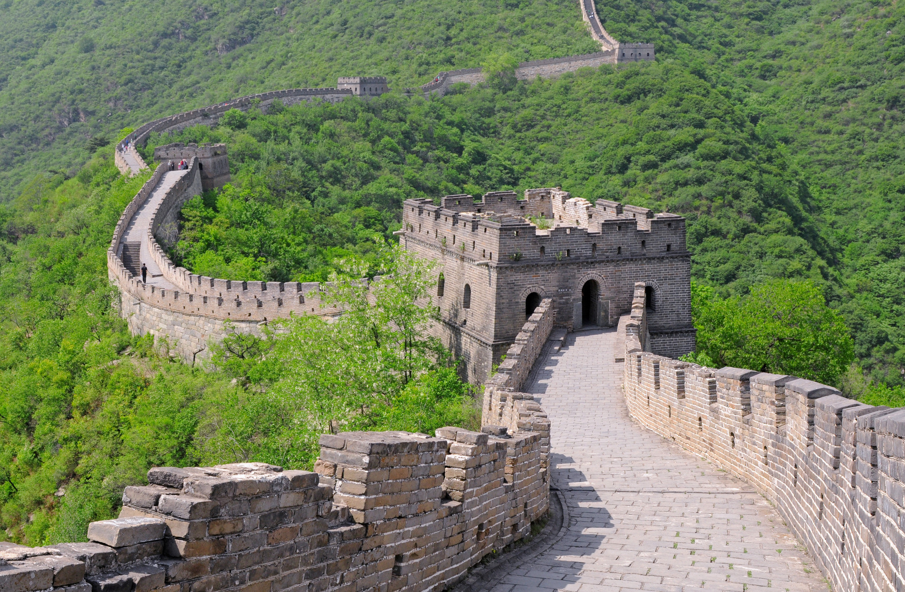
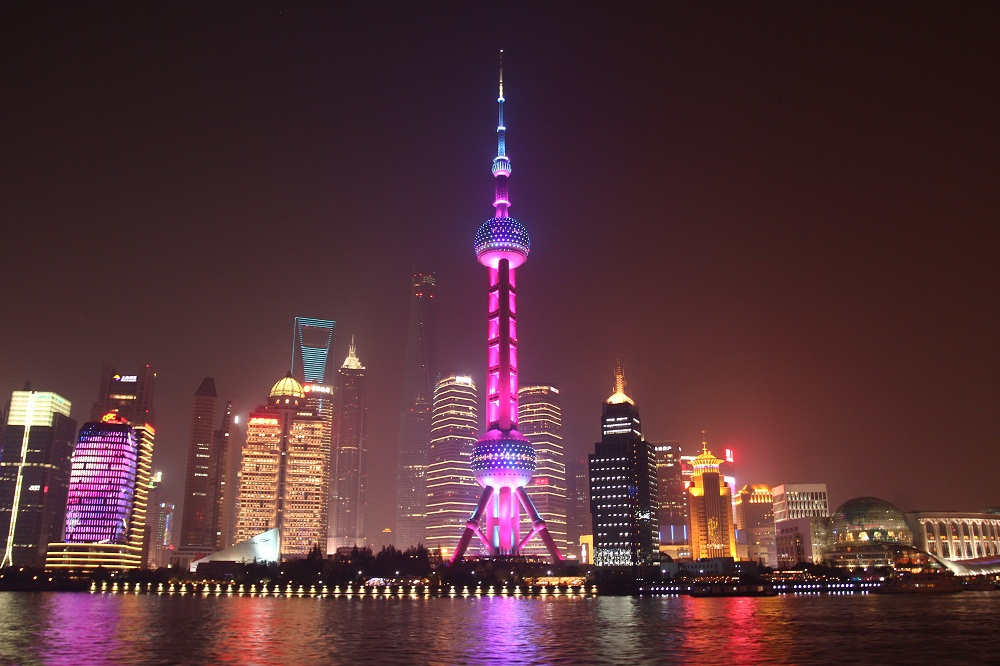
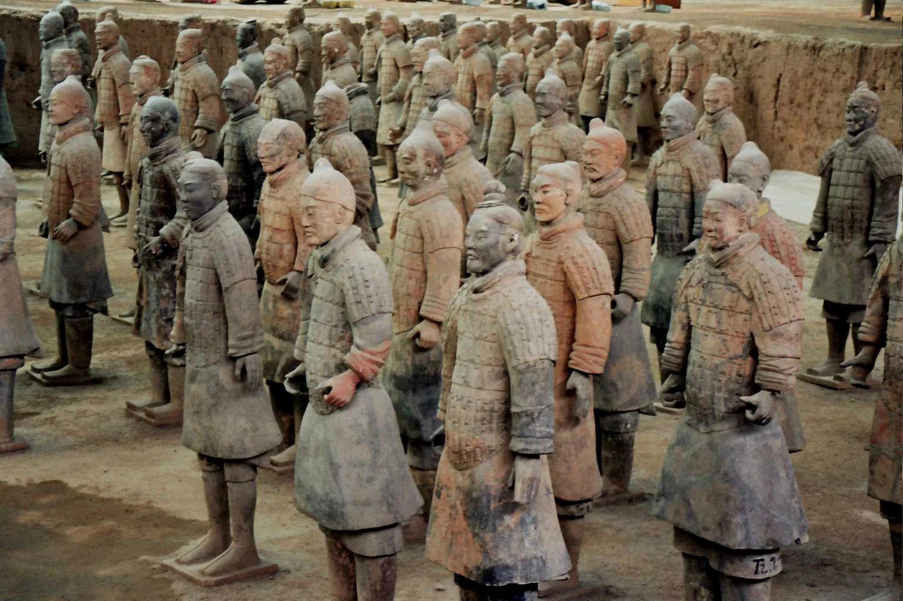

Uma das maravilhas do mundo construída há mais de 2000 anos. Com mais de 21 mil quilômetros, a Grande Muralha é um monumento impressionante que ofereça vistas espetaculares das montanhas e vales chineses.
Localização: Norte da China
Melhor época para visitar: Primavera e Outono
A maior metrópole da China é um centro financeiro moderno cheio de arranha-céus futuristas. Xangai combina tradição e inovação com seus templos antigos, bairros tradicionais e arquitetura contemporânea impressionante.
Localização: Leste da China
Melhor época para visitar: Primavera e Outono
Um exército de 8000 soldados de terracota descoberto em Xian, construído para proteger o primeiro imperador chinês. Essa obra-prima da arte antiga revela a sofisticação e o conhecimento dos artesãos chineses há milhares de anos.
Localização: Xian, Centro da China
Melhor época para visitar: Primavera e Outono